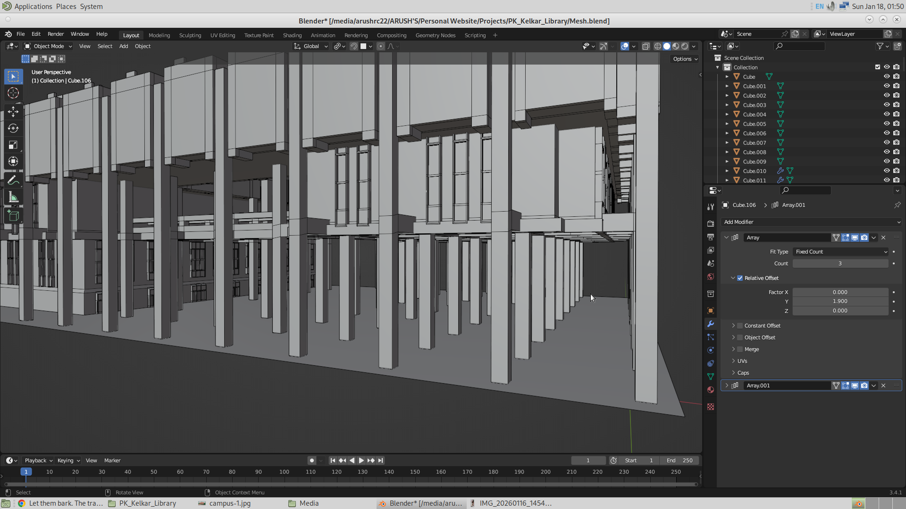
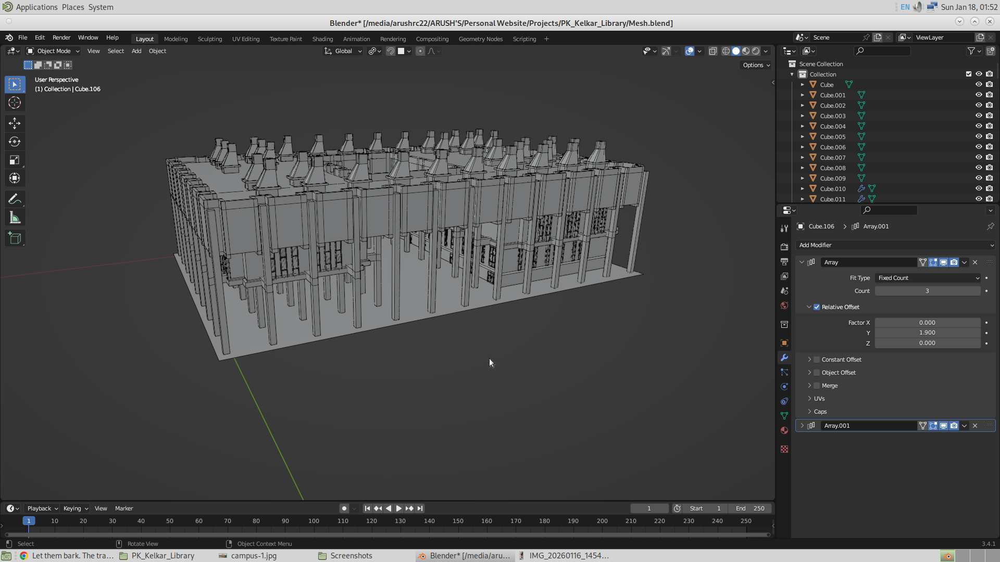
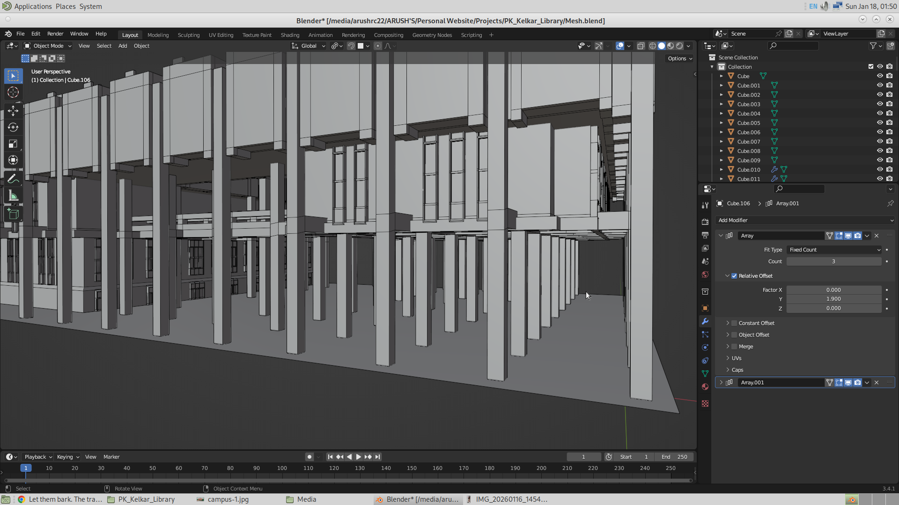
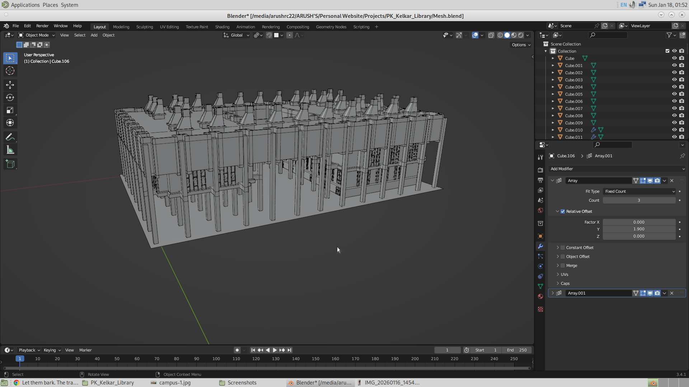
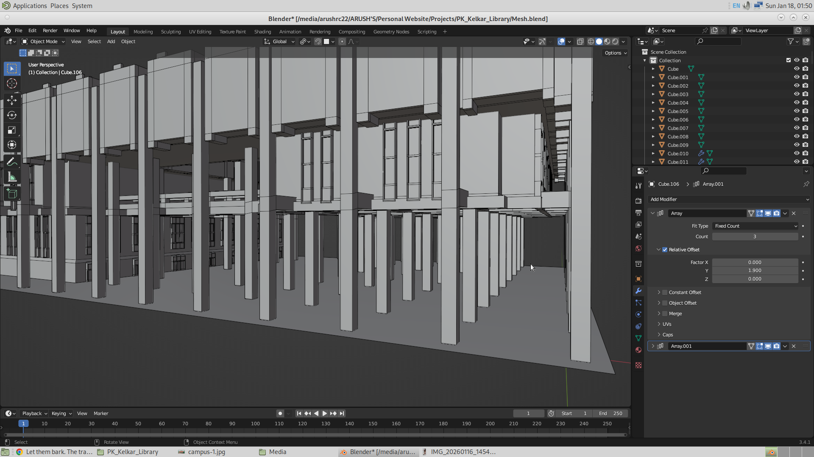
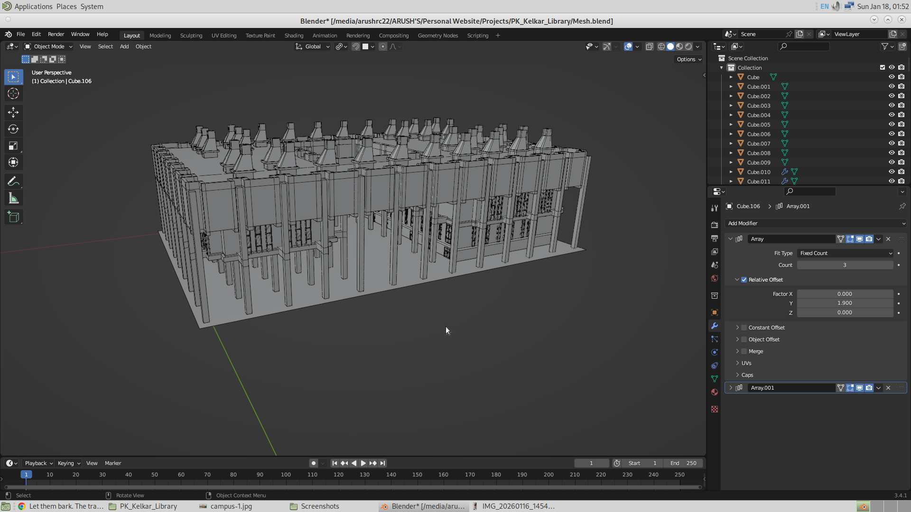
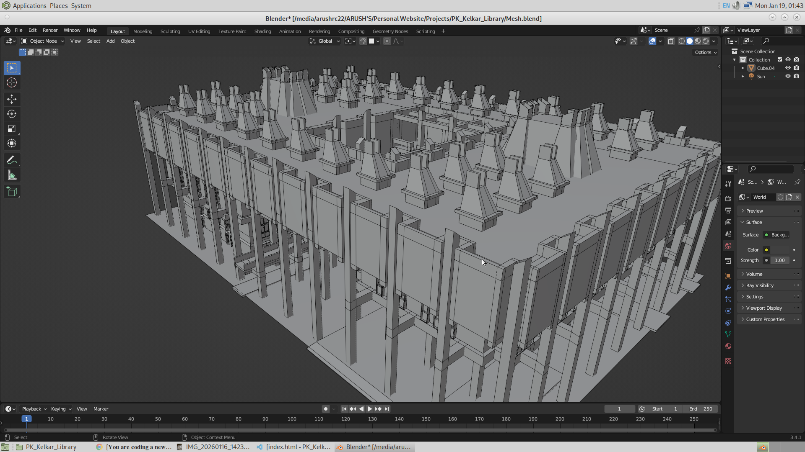
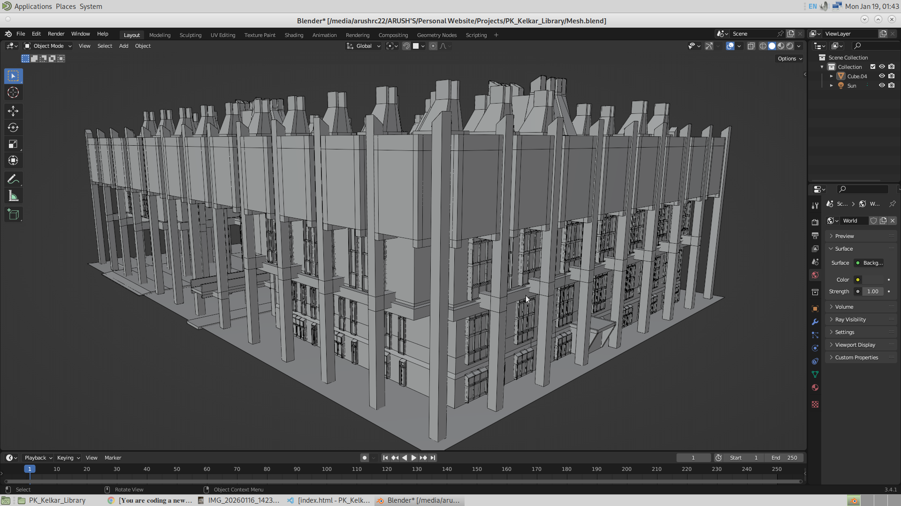
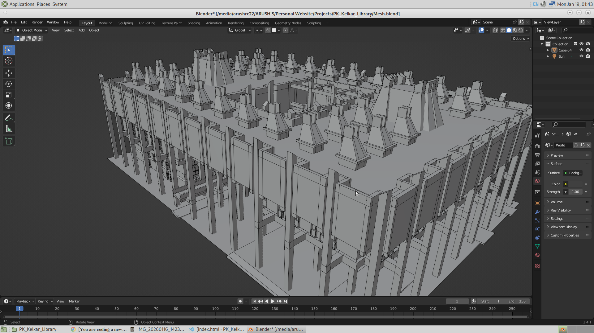
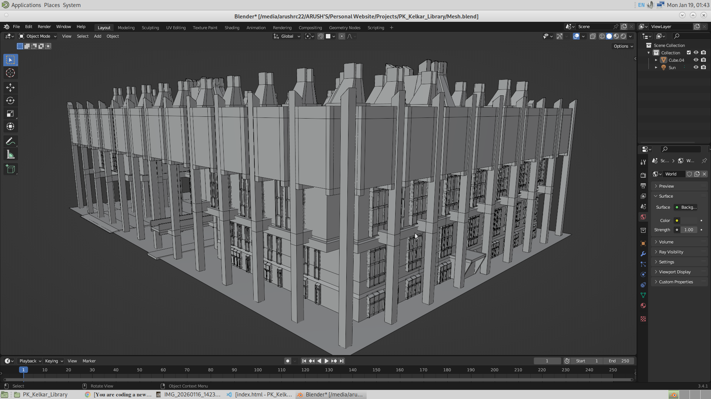

This project will be about making the 3D catalog of the library whcihb includes to make the search engine on the librayr. So here the user might enter the website and search for a book in the library exact location of the book in the racks of library. And this will include me to use three js and javascripot again. I may dive into database managament and see if I can use SQL to make the website more faster.
Interactive 3D Book Locator for P. K. Kelkar Library, IIT Kanpur The Red Shelf is a web-based library navigation system designed to help users quickly locate physical books inside the large and complex layout of the P. K. Kelkar Library. Instead of relying only on shelf codes or floor numbers, the system provides a visual, spatial wayfinding experience using an interactive 3D model of the library. Users search for a book by title, author, or identifier through a simple search interface. The backend queries catalog data and maps the book to its corresponding physical bookshelf. The frontend then displays a 3D model of the library, where the target bookshelf is dynamically highlighted in red, allowing users to visually understand the exact location of the book. This makes physical navigation faster, especially for new users and large collections. The system is built using Three.js for real-time 3D visualization and Blender for modeling the library layout and shelves. A Node.js + Express backend handles search requests and data flow, while PostgreSQL is used to maintain a relational mapping between books and their physical shelf locations. The project is designed to integrate with the institute’s existing library catalog infrastructure and is optimized for use on mobile devices as well as desktops. The Red Shelf focuses on clarity, usability, and performance rather than visual excess, ensuring that the experience remains lightweight and accessible. The project demonstrates the application of full-stack web development, database design, and 3D visualization to solve a real, campus-scale problem and is intended to be handed over as a functional tool for institutional use.
This project will be excuted in three phases. And they are as follows:
I have just now came taking some pictures of the library. And the link to all the pictures of library is given below. And after seeing the library closely, which I haven't done even though I have visited it multiple times, I see that it's architecture is magnificent. The complexity, and unsymmetricity in the desing makes me wonder how could some one even imagine this. The architect of our library is Achyut Kanvinde. I don't have words to describe how great his work is. Truly Amaaazing a work and an Amaaazing Architect! I have linked all the downloadable pictures of the library that I will be using as reference, below.
From tommorrow onwards, I will start modelling the library. So the plan it to make the model as low poly as possilbe, and visit the library later on perfecting the model with small details. But I dont aim to have a perfect model ready by tomorrow.
Ok so today, I got wasted. I am feeling very low from the start of this day. nothing seems to be working out. I am feeling very low. This might be the lowest poitn in my life. But I don't want to make this documentation a personal diary. So I will meet you tomorrow. And whether or not I start modelling will depend on my mood tomorrow.
Ok, so I tried making the library and I had gotten everything right, and as soon as the adrenaline rushed, my file got deleted due to Blender crashing. I got fucked up. This was very annoying. Hours of work got deleted instantly. I had almost completely made the entire outer part of the library before it fucked me.
Ok, so I put some more time in and made the model again. Now here are the results. As I proceed with the modeling, it becomes more and more easier, and more and more interesting. I have made more than what I expected.
Here are the images.


I am completely satisfied by today’s work. I have successfully made almost the entire exterior of our library, and now is the time when I will be building the interior, since that is why this application will be used. So today, I have completed the exterior except for the handles for the stairs and the staircase at the other side of the library. And apart from that, everything is done, along with the first implementation of Three.js. So with that, I will show some of the results that I have done today. I have also added an opening animation to make it look good, but haven’t added the search bar and the footer. I will be adding that in the next schedule.
 



So today, now that I have completely made the model and its website, next week I will work on perfecting the model and also working on the front end. So the task that is left is to make the frontend, which includes making the search bar and the footer, and also fixing the animation of the opening page of the website. And then the most important part is to name the shelves of the website. And then one thing I am thinking to do is use GSAP and make the user experience the interior of the library too. And this will give them an immersive experience to travel to the bookshelf. I will make the interior as minimal as possible.
So here is the flow. The user will click a start button and then he will see the website starting along with the animation. And then he will see the search bar, where he will put the ID of the book. And then after phase three of the project is completed, the user will see the bookshelf of that book turning red. So after that, the user has the option to use the GSAP method and actually travel along the path through the interior to get to the bookshelf. And once he clicks the first “flag,” he will be locked in the position of the camera, but he can rotate. And then he will click the next flag, and likewise he can travel to the bookshelf. So when he is locked in the GSAP, he will be allowed to go back to the normal view (global orbital), and during the GSAP mode, he will not be able to change the location of the camera, only the rotation. This will not allow the user to move into the mesh.
So today,I have added the search bar which will take in the ID of the book, and have also added the footer, the headign of the app. GIven below is the picture of the application. I also fixed the footer to become responsive.
I have done a lot of work today. I successfully animated the camera using GSAP. I added red-colored location icons, and when they are clicked, the camera animates to those locations, allowing the user to explore the library from the inside. My aim is to build on this and allow the user to navigate all the way to the final bookshelf they are looking for. The GitHub repository has also been updated, and the application is now live. The app is hosted on Vercel. I usually host all frontend websites on Vercel and use Render for the backend—just a recommendation.
AA lot of work has been done in these five days and I am going to explain them one by one. The first and major feature is the search. I have successfully added the search feature into the application, wherein now it is possible to search for a bookshelf, and for a dummy shelf system I have numbered them from 1 to 36.
So the way this is done is I have named the bookshelf such that it matches their actual names that will be used to make their color red in Three.js. And then when the search button is clicked, I make the bookshelf which was entered by the user red. The user will enter any number from 1 to 36, and so as soon as it submits the form, the bookshelf will be turned red, and also I make the whole library translucent. Now one issue I was getting was that even if the opacity was turning down, it was not making the mesh behind it visible. I was still unable to see the bookshelf behind the walls, and so I added these two lines.
if (child.isMesh && child.name == 'Cube041') {
child.material.transparent = true;
gsap.to(
child.material,
{
opacity : 0.5,
duration : 1,
onComplete : ()=>{
child.material.depthTest = true;
child.material.depthWrite = false;
}
}
)
}

Another feature I have added is that now the user could actually navigate itself to the bookshelf, and for that I used the GSAP locations placed inside the library to guide the user. I still had the feeling that this might be too complicated, since the user might not have much patience to tap onto each of the points and so on. But I will take a look at it some other time. Here are the pictures of me navigating myself to some bookshelf.
Another feature that is added is the refresh button. So now that I have added the search, going into the GSAP mode and coming back, I don’t want there to be the search button, since there is already a book to be found. And also I don’t want the user to not have the option to search another book. Actually, I could have kept the search visible, but that would mean that the library could never come back to its opaque state after the first search was made, since every time the user comes back from the GSAP mode, it will make the library translucent. And since translucent would mean more parts of the mesh have to be rendered, this actually makes the application slower. Considering that this also has to be run on smaller devices, I had no other option but to give the chance for the application to again show the opaque library. But I will think about this problem.
And then finally, I would like to say that I have used the GSAP library a lot this time. Whether it is to change the opacity of the library, camera movement, or the movement of other HTML elements, all are animated using GSAP, which has made the work easier.
And lastly, I have seen that having the controls with damping, made the application slower. And my experience with the three.js editor said me that it is better to have the orbital controls with no damping. And thus I disabled the damping.
//Reset the Controls
//controls.enableDamping = true;
//controls.dampingFactor = 0.05;
controls.screenSpacePanning = false;
controls.enablePan = false;
controls.minDistance = 0;
controls.maxDistance = 900;
controls.maxPolarAngle = Math.PI / 2;